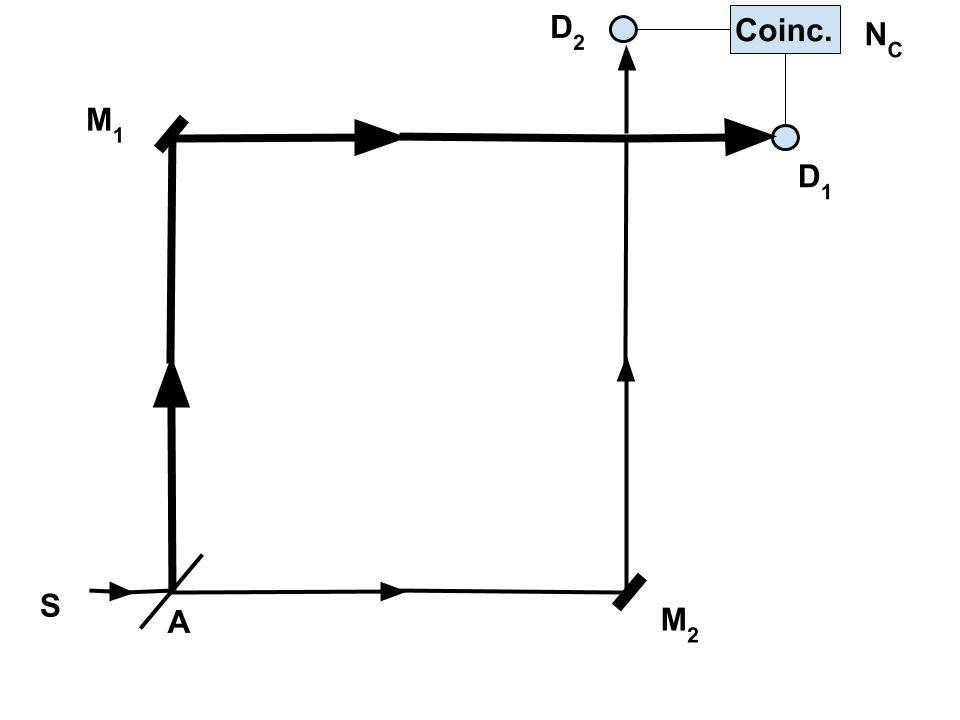

March 13, 2018; revised August 29, 2022
Summary: Photons are ALWAYS particles. They travel as particles and are detected as particles. But the position of a photon during travel cannot be pinned down to a point (due to the Heisenberg uncertainty principle; see, "What Is a Wave and What Is a Particle?"). Only POSSIBLE LOCATIONS of the photon at any time (and the probability of detection at each location) are provided by the wave function that represents the photon. The difference between a wave and a wave function was discussed in the previous post.
1. I must warn you that this post could be too advanced for many people. However, this is the sort of “deepest level” that we will go to in this section, and if one can at least comprehend the basic idea, then one should be able the follow the future posts. The basic idea that I am trying to express is that light consists of particles called photons.
- What is meant by a “wave” in wave-particle duality is vague, and people interpret the term differently. Therefore, resolving what is meant by a “wave” in “wave-particle” duality is helpful. Is it a “real wave” like a water wave, or is it a mathematical function?
- As shown below, it has been confirmed that photons are particles, and the word “wave” SHOULD NOT be used to describe light. But, the motion of a photon can be REPRESENTED by a wave function; it is a mathematical representation.
2. For example, a statement that is made frequently is, “..the position of a single particle is spread out over space..”. This is a misleading statement and should never be used. A particle always occupies a localized position; what is spread out is the wave function, indicating possible positions for the particle to be at a given time. See the summary statement above.
- A particle, whether an electron or a photon, is detected at a detector as a single detection event. When light -- reduced to low intensity -- is detected at a detector, those photons are registered as “single clicks.”
- Therefore, we should give up the notion of light as a “wave.” Light consists of photons; each photon may be represented by a wave function, which is a mathematical concept. This lingering and false idea of a “wave” is the main obstacle to having a unified theory of QM.
3. Newton believed that light consisted of particles. Newton’s corpuscular theory of light prevailed until around 1850 when it was abandoned because it could not explain light's interference and diffraction effects. Since then, light has been regarded as a wave for a while.
- But starting around 1900, that wave picture could not account for many new experimental observations, including the photoelectric effect, black-body radiation, and Compton scattering. Einstein proposed that light is quantized to explain the photoelectric effect (Einstein, 1905) -- for which he received the Nobel Prize in physics in 1921 -- and those quanta were given the name photon; they are the original "quanta" of quantum mechanics.
- Compton (Compton 1923) confirmed that a photon is a particle with momentum, for which he received the Nobel Prize in 1927.
- The photon concept has led to momentous advances in experimental and theoretical physics, such as lasers, Bose-Einstein condensation, and quantum field theory.
4. Then, in 1948, Feynman illustrated that it is not necessary to consider photons as waves at all (Feynman, 1948; Feynman, 1949; Feynman, 1985).
- While the first two references above are technical papers, the third one is a book written in very simple terms. I would recommend those who are interested to read the book. I am only going to summarize what is in the book.
- That book was based on a series of 4 lectures. These are simple lectures delivered to non-physicists and could be useful, especially if one does not have access to the book:
QED: Photons — Corpuscles of Light — Richard Feynman (1/4)
5. However, there was a persistent view up to 1986 that light could not be particles and that many effects, such as the photoelectric effect, can be explained without the concept of a photon (Lamb and Scully, 1968; Crisp and Jaynes, 1969; Mandel, 1976).
- The final confirmation of a photon as a particle had to wait until single-photon sources were developed. In 1986 Granger, Roger, and Aspect confirmed in their anticorrelation experiments that photons are indeed particles. We discuss this experiment below.
Proof That Photons Are Particles
The figure below shows the experimental configuration used by Granger, Roger, and Aspect to verify that photons are indeed particles (Granger, Roger, and Aspect, 1986).

1. Single photons generated at S are sent through a beam splitter, and a signal via each leg is detected at D1 and D2. In this experiment, one photon at a time is incident on the beam splitter A.
- If a photon is a particle, it can be either reflected at A and go towards mirror M1, which will then be detected at detector D1, OR, it could go through A, reflected by mirror M2, and detected at detector D2. Then a detection would register only at D1 or D2.
- However, if the photon is a wave, it could partially propagate through each arm and be detected at both D1 and D2 simultaneously. That would count as a “coincidence count (NC).”
- If a photon sometimes acts like a wave, there should be some coincidence counts.
2. The experiments confirmed that a given photon always takes one path at a time (Granger, Roger, and Aspect, 1986).
- This experiment conclusively proved that a photon travels either via path A M1 D1 or path A M2 D2.
- If photons had the "wave nature," there would have been at least some coincidence counts.
3. With this experimental confirmation, a photon is now categorized as an elementary particle. A photon at any wavelength is detected as a particle.
- In Feynman's Quantum Electrodynamics (QED), a photon is successfully treated as a particle that takes into account “all possible paths” via path integrals.
- In our proposed theory, a photon is a particle, and its motion is governed by a mathematical wave function set up instantaneously across space taking into account the details of the experimental arrangement; this wave function explains interference and diffraction effects.
4. Newton’s corpuscular theory of light was abandoned around 1850 because it could not explain interference and diffraction phenomena.
- However, when Feynman introduced his new approach to quantum mechanics in 1948, he proposed that “.The probability that a particle will be found to have a path x(t) lying somewhere within a region of space-time is the square of a sum of contributions, one from each path in the region. The contribution from a single path is postulated to be an exponential whose (imaginary) phase is the classical action (in units of ℏ) for the path in question..” (Feynman, 1948, p. 367).
- Then he applied that concept to describe the propagation of photons and electrons in his formulation of quantum electrodynamics (QED); see (Feynman, 1949). The basic idea of photon propagation using “all possible paths available” has been explained by Feynman in his introductory book (Feynman, 1985) on QED.
5. Feynman explained his theory of QED with simple diagrams without equations in his book (Feynman, 1985). See "Basis of the Proposed Interpretation – Feynman’s Technique in QED."
- However, his technique was completely ad hoc; there was no rationale behind it. As he explained (p. 10 of Feynman, 1985): "..what I am telling you is, while I am describing how Nature works, you won't understand why Nature works that way. But you see, nobody understands that. I can't explain why Nature behaves in this particular way".
- With new experimental results published since then, we can now understand the rationale behind his technique. That is what we will be discussing in the first series of posts and is also in the unpublished paper: "A Self-Consistent Interpretation of Quantum Mechanics Based on Nonlocality."
6. Of course, many phenomena involving light can be explained with light treated as an electromagnetic (EM) wave, just like the motion of large particles can be treated with Newtonian mechanics.
- But when analyzing quantum phenomena, the EM theory does not work for light, and the Newtonian mechanics does not work for microscopic particles. This is quite apparent in QED, which deals with the interactions of light with electrons.
Any questions on these QM posts can be discussed at the discussion forum: "Quantum Mechanics – A New Interpretation."
REFERENCES (Click to download the pdf)
Compton, A. H., A Quantum Theory of the Scattering of X-Rays by Light Elements (1923)
Crisp, M.D., Radiative effects in semiclassical theory (1969)
English Translation of Einstein-Generation and conversion of light with regard to a heuristic point of view (1905)
Feynman, R.P. Space-Time Approach to Non-Relativistic Quantum Mechanics (1948)
Feynman, R.P. Space-Time Approach to Quantum Electrodynamics (1949)
Feynman, R.P., QED: The Strange Theory of Light and Matter, Princeton University Press (1985).
Grainger, P. et al Experimental Evidence for a Photon Anticorrelation Effect (1986)
Lamb, W. E. and M. O. Scully, The Photoelectric effect without photons (1968). Available online at The Photoelectric effect without photons
Mandel. L., The case for and against semiclassical radiation theory, in Progress in Optics, vol. 13, North-Holland (1976). (pdf not available).
13 de março de 2018; revisado em 29 de agosto de 2022
Resumo: Os fótons são SEMPRE partículas. Eles se deslocam como partículas e são detectados como partículas. Mas a posição de um fóton durante o deslocamento não pode ser localizada com precisão em um ponto (devido ao princípio da incerteza de Heisenberg; veja “O que é uma onda e o que é uma partícula?”). A função de onda que representa o fóton fornece apenas as LOCALIZAÇÕES POSSÍVEIS do fóton a qualquer momento (e a probabilidade de detecção em cada local). A diferença entre uma onda e uma função de onda foi discutida no ensaio anterior.
1. Devo alertá-los de que este ensaio pode ser muito avançado para muitas pessoas. No entanto, esse é o tipo de “nível mais profundo” que alcançaremos nesta seção, e se for possível pelo menos compreender a ideia básica, então será possível acompanhar os próximos ensaios. A ideia básica que estou tentando expressar é que a luz consiste em partículas chamadas fótons.
- O que se entende por “onda” na dualidade onda-partícula é vago, e as pessoas interpretam o termo de maneiras diferentes. Portanto, esclarecer o que se entende por “onda” na dualidade “onda-partícula” é útil. Trata-se de uma “onda real”, como uma onda d’água, ou é uma função matemática?
- Conforme mostrado abaixo, já foi confirmado que os fótons são partículas, e a palavra “onda” NÃO DEVE ser usada para descrever a luz. No entanto, o movimento de um fóton pode ser REPRESENTADO por uma função de onda; trata-se de uma representação matemática.
2. Por exemplo, uma afirmação frequentemente feita é: “... a posição de uma única partícula está espalhada pelo espaço...”. Essa é uma afirmação enganosa e nunca deve ser usada. Uma partícula sempre ocupa uma posição localizada; o que está espalhado é a função de onda, indicando as posições possíveis em que a partícula pode estar em um determinado momento. Veja a afirmação resumida acima.
- Uma partícula, seja um elétron ou um fóton, é detectada em um detector como um único evento de detecção. Quando a luz — reduzida a baixa intensidade — é detectada em um detector, esses fótons são registrados como “cliques únicos”.
- Portanto, devemos abandonar a noção de luz como uma “onda”. A luz consiste em fótons; cada fóton pode ser representado por uma função de onda, que é um conceito matemático. Essa ideia persistente e falsa de uma “onda” é o principal obstáculo para se ter uma teoria unificada da Mecânica Quântica.
3. Newton acreditava que a luz consistia em partículas. A teoria corpuscular da luz de Newton prevaleceu até por volta de 1850, quando foi abandonada por não conseguir explicar os efeitos de interferência e difração da luz. Desde então, a luz passou a ser considerada uma onda por algum tempo.
- Mas, a partir de cerca de 1900, essa visão ondulatória não conseguiu explicar muitas novas observações experimentais, incluindo o efeito fotoelétrico, a radiação do corpo negro e a dispersão de Compton. Einstein propôs que a luz fosse quantizada para explicar o efeito fotoelétrico (Einstein, 1905) — pelo qual recebeu o Prêmio Nobel de Física em 1921 — e esses quanta receberam o nome de fóton; eles são os “quanta” originais da mecânica quântica.
- Compton (Compton, 1923) confirmou que um fóton é uma partícula com momento, pelo que recebeu o Prêmio Nobel em 1927.
- O conceito de fóton levou a avanços significativos na física experimental e teórica, como os lasers, a condensação de Bose-Einstein e a teoria quântica de campos.
4. Em seguida, em 1948, Feynman demonstrou que não é necessário, de forma alguma, considerar os fótons como ondas (Feynman, 1948; Feynman, 1949; Feynman, 1985).
- Enquanto as duas primeiras referências acima são artigos técnicos, a terceira é um livro escrito em termos muito simples. Recomendo a leitura do livro para quem estiver interessado. Vou apenas resumir o que está no livro.
- Esse livro foi baseado em uma série de quatro palestras. Trata-se de palestras simples ministradas a pessoas que não são físicas e que podem ser úteis, especialmente se não se tiver acesso ao livro:
QED: Fótons — Corpúsculos de Luz — Richard Feynman (1/4)
5. No entanto, até 1986, persistia a visão de que a luz não poderia ser composta por partículas e que muitos efeitos, como o efeito fotoelétrico, poderiam ser explicados sem o conceito de fóton (Lamb e Scully, 1968; Crisp e Jaynes, 1969; Mandel, 1976).
- A confirmação definitiva de que o fóton é uma partícula só ocorreu com o desenvolvimento de fontes de fótons individuais. Em 1986, Granger, Roger e Aspect confirmaram, em seus experimentos de anticorrelação, que os fótons são, de fato, partículas. Discutiremos esse experimento a seguir.
Prova de que os fótons são partículas
A figura abaixo mostra a configuração experimental utilizada por Granger, Roger e Aspect para verificar que os fótons são, de fato, partículas (Granger, Roger e Aspect, 1986).
1. Fótons individuais gerados em S são enviados através de um divisor de feixe, e um sinal em cada ramificação é detectado em D1 e D2. Nesse experimento, um fóton por vez incide sobre o divisor de feixe A.
- Se um fóton for uma partícula, ele pode ser refletido em A e seguir em direção ao espelho M1, sendo então detectado no detector D1, OU pode atravessar A, ser refletido pelo espelho M2 e detectado no detector D2. Nesse caso, uma detecção seria registrada apenas em D1 ou em D2.
- No entanto, se o fóton for uma onda, ele poderia se propagar parcialmente por cada braço e ser detectado simultaneamente tanto em D1 quanto em D2. Isso seria contabilizado como uma “contagem por coincidência (NC)”.
- Se um fóton às vezes se comportar como uma onda, deveria haver algumas contagens por coincidência.
2. Os experimentos confirmaram que um determinado fóton sempre segue um caminho de cada vez (Granger, Roger e Aspect, 1986).
- Essa experiência provou de forma conclusiva que um fóton se desloca pela trajetória A M1 D1 ou pela trajetória A M2 D2.
- Se os fótons tivessem a “natureza ondulatória”, teria havido pelo menos algumas contagens por coincidência.
3. Com essa confirmação experimental, um fóton é agora classificado como uma partícula elementar. Um fóton em qualquer comprimento de onda é detectado como uma partícula.
- Na Eletrodinâmica Quântica (QED) de Feynman, o fóton é tratado com sucesso como uma partícula que leva em conta “todos os caminhos possíveis” por meio de integrais de caminho.
- Em nossa teoria proposta, um fóton é uma partícula, e seu movimento é regido por uma função de onda matemática estabelecida instantaneamente no espaço, levando em conta os detalhes do arranjo experimental; essa função de onda explica os efeitos de interferência e difração.
4. A teoria corpuscular da luz de Newton foi abandonada por volta de 1850 porque não conseguia explicar os fenômenos de interferência e difração.
- No entanto, quando Feynman apresentou sua nova abordagem à mecânica quântica em 1948, ele propôs que “A probabilidade de que uma partícula seja encontrada com um caminho x(t) situado em algum ponto dentro de uma região do espaço-tempo é o quadrado da soma das contribuições, uma de cada caminho na região. Postula-se que a contribuição de uma única trajetória seja uma função exponencial cuja fase (imaginária) é a ação clássica (em unidades de ℏ) para a trajetória em questão...” (Feynman, 1948, p. 367).
- Em seguida, ele aplicou esse conceito para descrever a propagação de fótons e elétrons em sua formulação da eletrodinâmica quântica (QED); ver (Feynman, 1949). A ideia básica da propagação de fótons utilizando “todos os caminhos possíveis disponíveis” foi explicada por Feynman em seu livro introdutório (Feynman, 1985) sobre a QED.
5. Feynman explicou sua teoria da QED com diagramas simples, sem equações, em seu livro (Feynman, 1985). Veja “Fundamentos da Interpretação Proposta – A Técnica de Feynman na QED”.
- No entanto, sua técnica era totalmente ad hoc; não havia nenhuma lógica por trás dela. Como ele explicou (p. 10 de Feynman, 1985): “... o que estou dizendo é que, embora eu esteja descrevendo como a Natureza funciona, vocês não vão entender por que a Natureza funciona dessa maneira. Mas veja bem, ninguém entende isso. Não consigo explicar por que a Natureza se comporta dessa maneira específica”.
- Com novos resultados experimentais publicados desde então, agora podemos compreender a lógica por trás de sua técnica. É isso que discutiremos na primeira série de ensaios e que também consta no artigo ainda não publicado: “Uma Interpretação Autoconsistente da Mecânica Quântica Baseada na Não-localidade”.
6. É claro que muitos fenômenos envolvendo a luz podem ser explicados tratando-se a luz como uma onda eletromagnética (EM), assim como o movimento de partículas grandes pode ser tratado pela mecânica newtoniana.
- Mas, ao analisar fenômenos quânticos, a teoria EM não se aplica à luz, e a mecânica newtoniana não se aplica a partículas microscópicas. Isso fica bastante evidente na QED, que lida com as interações da luz com elétrons.
Quaisquer dúvidas sobre esses ensaios de Mecânica Quântica podem ser discutidas no fórum de discussão: “Mecânica Quântica – Uma Nova Interpretação”.
REFERÊNCIAS (Clique para baixar o PDF)
Compton, A. H., Uma Teoria Quântica da Dispersão de Raios X por Elementos Leves (1923)
Crisp, M.D., Efeitos radiativos na teoria semiclássica (1969)
Tradução para o inglês de Einstein – Geração e conversão da luz sob um ponto de vista heurístico (1905)
Feynman, R.P. Abordagem Espaço-Temporal da Mecânica Quântica Não-Relativística (1948)
Feynman, R.P. Abordagem Espaço-Temporal da Eletrodinâmica Quântica (1949)
Feynman, R.P., QED: A estranha teoria da luz e da matéria, Princeton University Press (1985).
Grainger, P. et al. Evidência experimental de um efeito de anticorrelação de fótons (1986)
Lamb, W. E. e M. O. Scully, O efeito fotoelétrico sem fótons (1968). Disponível online em O efeito fotoelétrico sem fótons
Mandel, L., Argumentos a favor e contra a teoria semiclássica da radiação, em *Progress in Optics*, vol. 13, North-Holland (1976). (PDF não disponível).